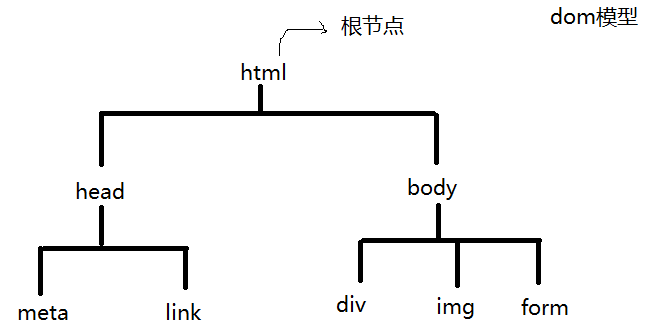

body, td { font-family: 微软雅黑; font-size: 12pt; }
梳理知识点
bom 对象有哪些？？ window document history navigator screen event location
window对象方法 : alert prompt confirm
定时器 ：
setInterval setTimeout
open() 弹出窗口 （在服务器下运行）
document对象 ：
byClassName byName tagName byId querySelector("") querySelectorAll() 这几个返回值是一个伪数组，使用其中元素需要加下标
操作属性
obj.属性名 = 值
操作样式
obj.style.color = ""
.style.cssText = ""
.className = "类名"
操作内容
innerHTML : "<b style=''>"
innerText :
outerHTML
value
location.href = ""
ps:window.innnerWidth --- 获取屏幕（浏览器）宽度
window.innerHeight --- 获取屏幕高度
2、DOM 模型 document object model

节点 :
html 是dom模型的根节点
所有的html标签都叫元素节点
所有标签的属性叫做 属性节点
所有的标签内容叫做 文本节点
一切都是节点
tagName 获取查找元素的标签名称 tag:标签 【注】：tagName标签名和nodeName节点名的返回值都是大写
nodeName 节点名 node:节点
console.log(oDiv.nodeName)//DIV---节点名
console.log(oDiv.tagName)//DIV---标签名
节点关系 ：
parentNode 父节点
this.parentNode.parentNode.remove();
nextElementSibling 下一个兄弟节点 nextSibling （低版本浏览器） sibling:兄弟
【注】:这几个带Element的带就是高版本使用，不带是低版本使用
target.nextElementSibling.style.background = "pink";
previousElementSibling 前一个兄弟节点 sibling:兄弟 previous:以前的
firstElementChild 第一个孩子节点 lastElementChild 最后一个孩子节点 【注】body的firstElementChild是tbody
childNodes 孩子节点 会将页面中的空白（回车）作为文本节点 获取
<ul>
<li>葫芦娃1</li>
<li>葫芦娃2</li>
<li>葫芦娃3</li>
<li>葫芦娃4</li>
<li>葫芦娃5</li>
<li>葫芦娃6</li>
<li>葫芦娃7</li>
</ul>
var oUl = document.querySelector("ul");
alert( oUl.childNodes.length)//15
alert(oUl.childNodes[0].nodeType )//3
children 孩子节点 【注】：只是第一级孩子，即是自己的儿子
alert(oUl.children.length)//7
节点类型 ： nodeType 【注】：返回值为1的话代表元素节点，为2代表属性节点，为3代表文本节点
元素节点 1
文本节点 3
属性节点 2
3、节点动态操作 (创建、添加、删除)
创建一个元素节点 ：
document.createElement("元素节点名称");
var tab = document.createElement("table");
创建一个文本节点：
document.createTextNode("文本内容");
var oDiv = document.querySelector("div");
var tex = document.createTextNode("hah");
oDiv.appendChild(tex)
//oDiv.innerHTML = "hah"
添加节点appendChild() ： append：附加，贴上
【注】：appendChild（节点名字），节点名字不用加引号，是个对象类型。标签节点都是对象类型，括号内的节点是新创建的节点，即document.createElement创建的节点
alert( document.querySelector("img") );//[object HTMLImageElement]
父节点.appendChild(要添加的子节点);
tr.appendChild(td);
任意位置添加节点 ： insertBefore（） insert：插入，嵌入
父节点.insertBefore( 要添加的子节点 , 参照节点 ); 写满两个参数
参照节点 如果为 null ， 表示 追加
var oLi = document.createElement("li");
oLi.innerHTML = "光头强来了";
oUl.insertBefore(oLi,oUl.children[0])
var oBox = document.createElement("div");
oBox.innerHTML = "box";
//document.body.insertBefore(oBox,null)//null表示追加，在尾部添加等价于 obj.appendChild()
document.body.insertBefore(oBox,oDiv)//必须写两个参数，在第二个节点钱插入第一个节点，如果第二个节点为null时，就是在尾部添加
oBox.remove();//删除节点
document.body.removeChild(oDiv);//删除节点
删除节点 ：
父节点.removeChild(删除的节点);
document.body.removeChild(divs[i])
要删除的节点.remove();
this.parentNode.parentNode.remove();
注意：动态创建的元素 在函数体内部查找 （如果在函数体外部查找，必须使用委托）
4、节点克隆
cloneNode( true ) 加true 表示深度克隆，即克隆对象本身，又克隆内容 没有参数true，只克隆对象本身
var oDiv = document.querySelector("div");
var oCl = oDiv.cloneNode(true);
document.body.appendChild(oCl)
var oClone = oBox.cloneNode(true);//true 深度克隆
document.body.appendChild(oClone);//obj.appendChild()---在尾部添加
5、文档碎片
作用 ： 提高执行效率
document.createDocumentFragment() fragment:碎片
console.time("定时器的名字")
面试题：
请准确编写这样一个函数：该函数接受两个参数，第一个参数为一个DOM元素，第二个参数为一个正整数，
要求第二个参数传入的数字是几，就向DOM元素上挂载几个<div>hello world</div>标签，实现过程中，请考虑JS性能优化。
function createDom( ele,num ){
var cache = createDocumentFragment();
for( var i = 0 ; i < num ; i++ ){
var domele = document.createElement(ele);
cache.appendChild( domele );
}
document.body.appendChild( cache );
}
function createDom( ele,num ){//文档碎片
var cache = createDocumentFragment();//创建文档碎片
for( var i = 0 ; i < num ; i++ ){
var domele = document.createElement(ele);//创建需要在文档碎片上添加的东西
cache.appendChild( domele );//在文档碎片上添加
}
document.body.appendChild( cache );//将文档碎片添加到页面上
}
6、节点属性的动态操作
自定义属性 不能直接通过 对象.属性 获取属性值 ，需要通过 下面的方法来获取
【注】：css中的是样式，不是属性，获取样式用getComputedStyle
function getStyle(obj,attr){
//只能获取css样式，js属性获取不到，比如offsetWidth
if( window.getComputedStyle ){
return window.getComputedStyle(obj,false)[attr];
}else{
return obj.currentStyle[attr];
}
}
getAttribute() 获取属性值 attribute:属性
<div index = "1"></div>
var oDiv = document.querySelector("div");
oDiv.zhizhang = 1;//这样创建的自定义属性在行内看不到，但属性是加上了
console.log(oDiv.zhizhang)//1
console.log(oDiv.index)//undefined
console.log(oDiv.getAttribute("index"))
//在行内添加的自定义属性，在js中直接获取不到，需要用obj.getAttribute("要获取的属性名")
setAttribute("属性名",“值”) 设置属性 即可以添加 自定义属性 也可以 设置原有的属性
oDiv.setAttribute("ck",15)//这样创建的属性在行内看的到，但必须用getAttribute获取
console.log(oDiv.ck)//undefind
console.log(oDiv.getAttribute("ck"))//15
removeAttribute() 删除 setAttribute设置的属性
oDiv.removeAttribute("zhizhang")
console.log(oDiv.zhizhang)//1没有删除掉，说明只能删除掉通过obj.setAttribute()建立的属性
oDiv.removeAttribute("ck")//删除掉了，行内看不到该属性了
console.log(oDiv.getAttribute("ck"))//null，删除掉的值为null